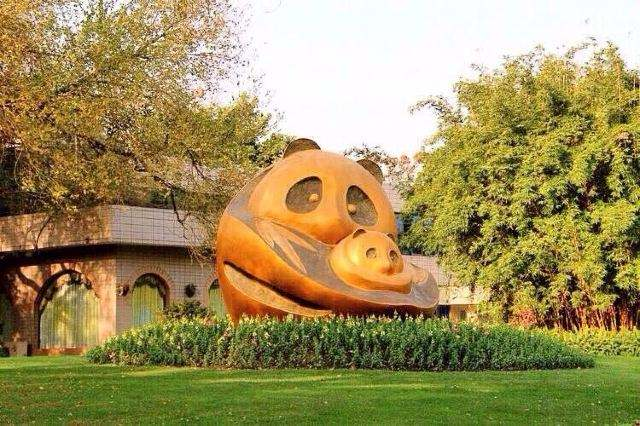
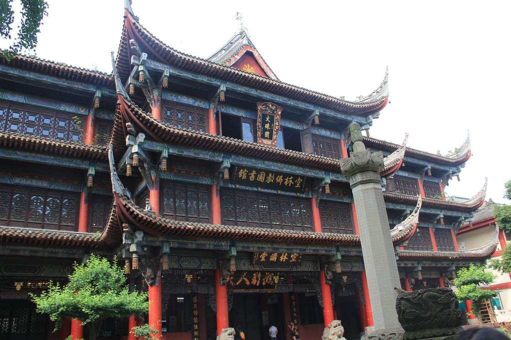
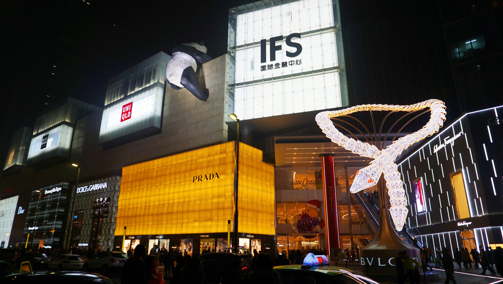

| Day 1 |
|---|
| Day 2 |
| Day 3 |
| Day 4 |
| Day 5 |
| Day 6 |
Day 5: 成都
팬더기지 / 成都大熊猫繁育研究基地 / AM7~AM11
팬더는 오직 중국에서만 서식하고 있는 동물이다. 중국에서도 팬더를 가장 많이 볼수있는 곳이 바로 청두 팬더기지이다. 팬더는 날씨가 더워지면 활동을 안하기 때문에 아침 일찍 대중교통을 이용해서 가주도록 한다. 그리고 관광지이기 때문에 먹을것이 다 비싸고 맛이 없기 때문에 먹을것을 좀 싸가도록하자.
문수원 / 文殊院 / PM1~PM2
그 다음에 들릴 곳은 또 하나의 불교 사찰인 문수원이다. 이 곳도 유명한 불교 사찰이긴 하지만 사실 이곳에 들린 이유는 근처에 음식점이 많기 때문이다. 팬더 기지를 둘러보느라 지쳤을테니 일단 근처 음식점에서 맛있게 밥을 먹어준 후 천천히 구경하도록 하자.
춘시루 / 春熙路 / PM3~PM5
그 다음으로 가볼곳은 청두의 시내인 춘시루이다. 청두의 시내는 정말 어마어마하게 크다. 중국의 수도인 북경의 시내도 이렇게 크진 않았던것 같다. 정말 크고 볼것도 많고 먹을것도 많고 쇼핑할 것도 많으니 천천히 구경도 하고 쇼핑도 하고 커피도 마시다가 시간되면 맛있는 음식점가서 저녁을 먹어주도록 하자.
구안교 / 九眼桥酒吧街 / PM7~PM9

일단 춘시루를 끝으로 계획한 일정은 모두 마쳤다. 이 날은 아침 일찍부터 일어나서 움직였으니 저녁 시간은 자유롭게 사용하도록 하자. 춘시루가 예쁘다면 밤까지 계속 있어도 되고 전날 갔었던 구안교에 다시 가서 야경을 좀 더 구경해도 되고 피곤하다면 숙소에 들어가 쉬어도 된다. 한번 더 가보고 싶었던 곳이나 이미 가본곳 이외에도 가보고 싶은 곳이 있다면 이 시간에 가보록 하자.